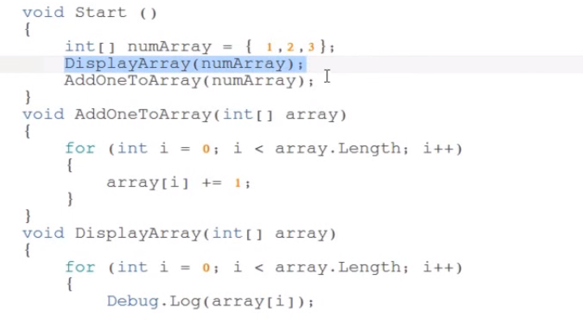
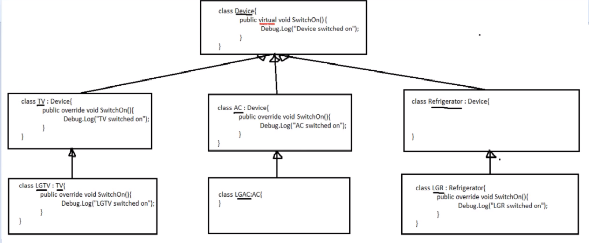
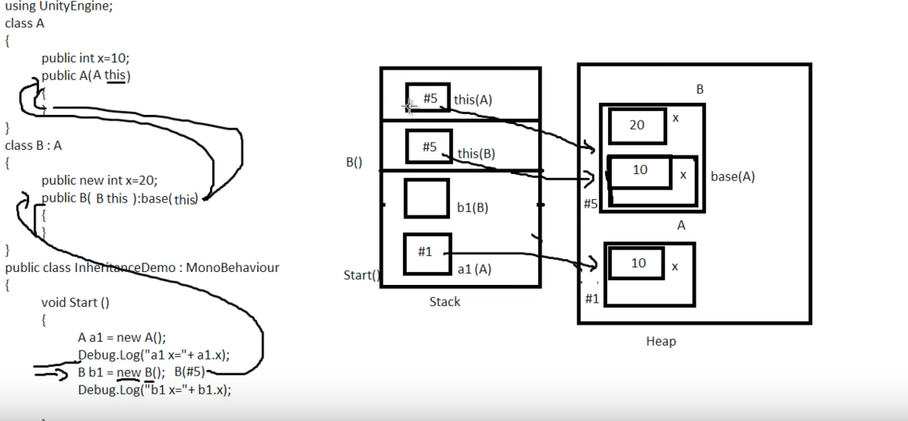
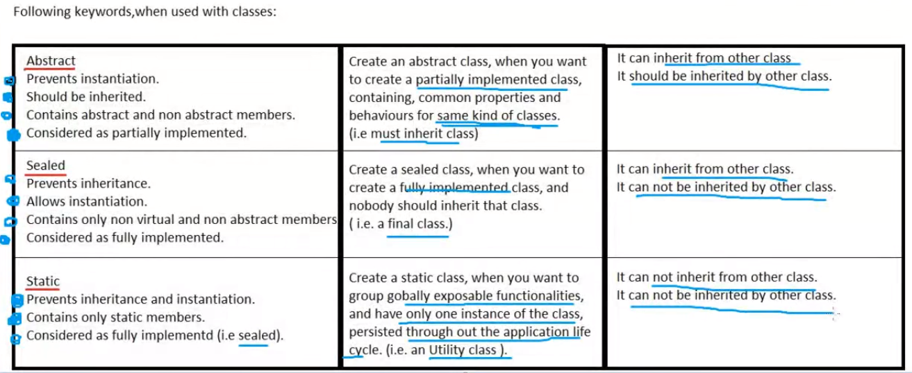
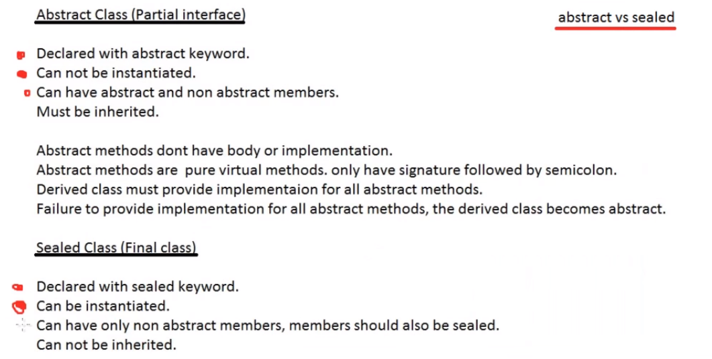
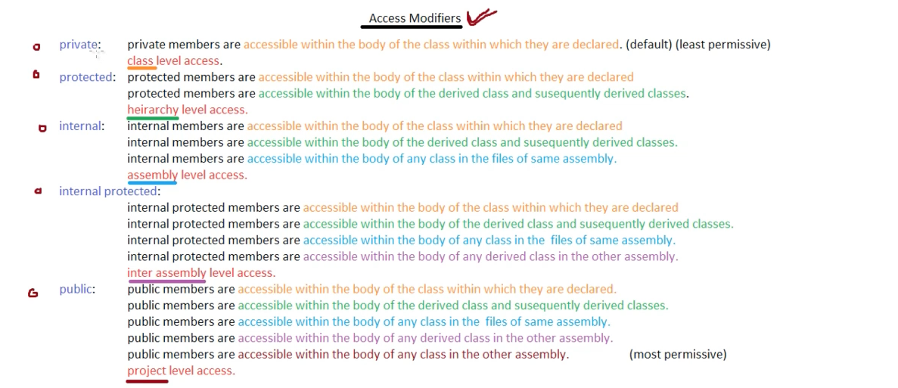
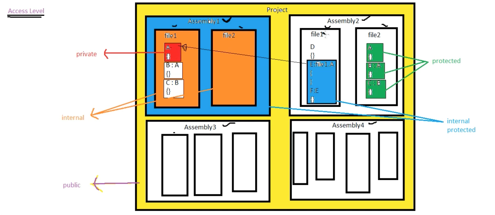
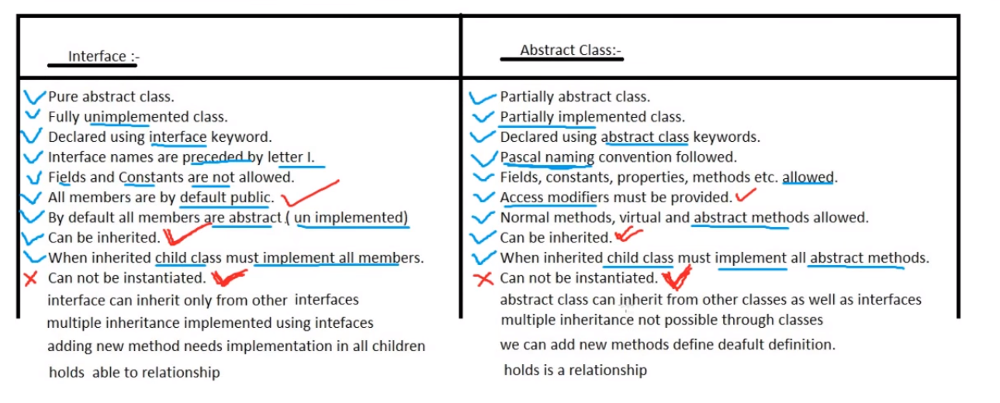

Animator Component
The Animator component controls animation playback on a GameObject using an Animator Controller — a state machine that manages transitions between animation clips.
Apply Root Motion
When Apply Root Motion is enabled, the GameObject moves in world space according to the movement embedded in the animation itself. Disable it if you want to control movement purely from scripts.
Playing Animations from Code
// anim.Play( stateName, layerIndex, normalizedTime )
anim.Play("wait", -1, 0f); // Play from start (0f)
anim.Play("wait", -1, 0.5f); // Play from mid-point (0.5f)-1 refers to the Base Layer (index -1 is always the default root layer).
Layers
- Animation states are organised into layers
- The Base Layer is the default root layer with index
-1 - Additional layers can override or add to the base animation (e.g., upper-body overlay)
Blend Tree
A Blend Tree is a child layer of the Base Layer used to smoothly blend between multiple animations based on one or two float parameters.
Blend Types available:
- 1D — blend based on a single float parameter
- 2D Simple Directional — blend by direction (one motion per direction)
- 2D Freeform Directional — blend by direction with multiple motions per direction
- 2D Freeform Cartesian — blend along X and Y axes independently
- Direct — manually set blend weights from script
Animation Clip Features
- Curve — float values animated over time alongside the clip, readable from scripts
- Event — callbacks to trigger script functions at specific frames of the animation
Canvas
The Canvas is the root container for all Unity UI elements. Every UI element must be a child of a Canvas. The Canvas itself is a GameObject with a Canvas component attached.
Canvas Render Modes
| Mode | Description |
|---|---|
| Screen Space — Overlay | Renders on top of everything, always facing the camera. No camera required. |
| Screen Space — Camera | Rendered by a specific camera. Allows post-processing effects on UI. |
| World Space | Canvas exists as a 3D object in the scene — used for in-world UI like health bars on enemies. |
Canvas Scaler — UI Scale Modes
- Constant Pixel Size — UI stays the same pixel size regardless of screen resolution
- Scale with Screen Size — UI scales to match the screen resolution (recommended for most projects)
- Constant Physical Size — UI maintains a fixed physical size based on DPI
UI Anchor Presets
- Anchors define how a UI element is positioned relative to its parent
- Click preset — moves the anchor pivot
- Alt + Click preset — snaps the element to that anchor position
- Shift + Alt + Click preset — snaps the element AND moves its centre pivot to the anchor position
Sprite Renderer vs Mesh Renderer
2D images (sprites) are displayed using a Sprite Renderer component, not the Mesh Renderer used by 3D objects. Sprites work in both 2D and 3D scenes.
Pixels Per Unit
The Pixels Per Unit setting defines how many sprite pixels equal one Unity world unit.
- Default: 100 pixels = 1 unit — a 100px sprite fills exactly 1 unit in the scene
- A lower value means each pixel represents more world space (affects physics forces needed to move objects)
- Tip: for 16×16 tile sprites, set Pixels Per Unit to 16 so tiles snap together perfectly in the scene
Text & Transformations
Text Outline Effect
Add the Outline component to any Text element to add a coloured border. Unity's legacy Text component also supports simple HTML-style rich text tags: <b>, <i>, <color=#hex>.
Transform Field Arithmetic
In the Transform Inspector, you can type arithmetic expressions directly into X/Y/Z fields — Unity evaluates them automatically. For example, typing 5*2 sets the value to 10.
Time Scale
Time.timeScale controls the speed at which time passes in the simulation. It affects all time-based functions (Time.deltaTime, physics, animations) except Time.realtimeSinceStartup.
| Value | Effect |
|---|---|
1.0 | Normal real-time speed |
0.5 | Slow motion — time passes 2× slower than real time |
0.0 | Game paused — all frame-rate independent functions stop |
timeScale, also lower Time.fixedDeltaTime by the same ratio to keep physics consistent. FixedUpdate() is not called when timeScale = 0.
Vector Math
Magnitude
Returns the length (distance) of a vector — i.e., the straight-line distance between two points.
float dist = (targetPos - transform.position).magnitude;Dot Product
Takes two vectors, returns a scalar. Useful for checking the relationship between directions:
- Result =
0→ vectors are perpendicular (90°) - Result >
0→ vectors point in roughly the same direction - Result <
0→ vectors point in opposite directions
float dot = Vector3.Dot(vectorA, vectorB);Cross Product
Takes two vectors, returns a third vector perpendicular to both. Used to find the normal of a surface or determine rotation direction.
Vector3 perp = Vector3.Cross(vectorA, vectorB);Trigonometry — Finding an Angle
// Returns the angle (in radians) of a direction vector
float angle = Mathf.Atan2(y, x);
// Convert to degrees
float angleDeg = angle * Mathf.Rad2Deg;Arrays

AddOneToArray() affects the original — the output shows the updated values, not the originals.Numeric Data Types
| Type | Suffix | Example | Note |
|---|---|---|---|
| float | f | 22.2f | Without f, treated as double |
| double | d | 22.2d | Default for floating-point literals |
| decimal | m | 22.2m | High precision, used for currency |
Type Conversion
Implicit Conversion (Coercion)
Automatically performed by the compiler when assigning a smaller type to a larger type — no data loss possible.
short s = 10; // 2 bytes
int i = s; // implicit — safe, int is 4 bytesExplicit Conversion (Type Casting)
Required when converting a larger type into a smaller one — must be explicitly specified by the programmer.
int i = 10;
short s = (short) i; // explicit cast
// Parse string to int
int a = int.Parse("22");
// Primitive to string
string str = Convert.ToString(123);Boxing & Unboxing
- Boxing — wrapping a primitive value type inside an
Objectcontainer (e.g., storing anintasobject) - Unboxing — extracting the primitive value back out of the
Objectwrapper
Update()).print() vs Debug.Log()
| Method | Available in | Call chain |
|---|---|---|
print() | MonoBehaviour only | Calls Debug.Log() → Debug.Internal_Log() — 3 hops |
Debug.Log() | Any class | Calls Debug.Internal_Log() directly — 2 hops |
Prefer Debug.Log() — it's slightly more efficient and available everywhere, not just in MonoBehaviour subclasses.
Operator Overloading — String + Number
The + operator is overloaded. Its behaviour changes based on operand types:
string + string = string // concatenation
string + num = string // num converted to string
num + num = num // addition
string + num + num = string // left-to-right: first concat, then concat
string + (num + num) = string // inner brackets add first, then concatCore OOP Concepts
| Concept | Definition |
|---|---|
| Class | A blueprint or template for creating objects. Defines properties and behaviour. |
| Object | A runtime instance of a class. Represents a real-world entity (player, enemy, vehicle). |
| Encapsulation | Wrapping data and the methods that operate on it into a single unit (the class). |
| Inheritance | Creating a new class based on an existing class, reusing and extending its behaviour. |
| Abstraction | Hiding unnecessary implementation details — exposing only what the user needs. |
| Polymorphism | The ability for one construct to take many forms (method overloading, overriding). |
Inheritance
Inheritance organises classes into a hierarchy from general → specialised. A derived class inherits all non-private members of its base class.
- Represents an "is-a" relationship (a
TVis aDevice) - Promotes reusability — reduce code duplication
- Promotes extensibility — add specialised behaviour without modifying the base

Device is the base class. TV, AC and Refrigerator each override SwitchOn(). LGTV, LGAC and LGR further extend those derived classes.Reference vs Instance
B b1 = new B();
// b1 → reference variable (stores a memory address)
// new B() → instance / object allocated on the heapMemory: Stack & Heap

B b1 = new B() is called, the reference b1 (address #5) goes on the Stack; the B object is allocated at that address on the Heap.this vs base Keywords
| Keyword | Usage |
|---|---|
this | Refers to members of the current class |
this() | Calls another constructor in the same class |
base | Refers to members of the base/parent class |
base() | Calls the base class constructor |
Type Casting with Inheritance
Implicit (Upcasting) — Safe
A base class reference can point to a derived class instance. This is always safe.
BaseClass b = new DerivedClass(); // valid ✓
// b can only access BaseClass members — DerivedClass-specific members are hiddenExplicit (Downcasting) — Unsafe
A derived class reference cannot point to a base class instance — the base may not have all the members the derived reference expects.
DerivedClass d = new BaseClass(); // NOT valid ✗
// Derived reference expects derived members, but base instance doesn't have them
// Safe downcast using 'as' keyword:
TV tv = device as TV; // returns null if device is not a TV (no exception thrown)
// Type check with 'is' keyword:
if (device is TV) { Debug.Log("device is a TV"); }Why MonoBehaviour Scripts are Components
Two Types of Polymorphism
| Type | Resolved at | Achieved by |
|---|---|---|
| Static (Compile-time) | Compile time | Function Overloading, Operator Overloading |
| Dynamic (Runtime) | Runtime | Function Overriding (virtual / override) |
Virtual vs Abstract Methods
| Virtual Method | Abstract Method | |
|---|---|---|
| Has body? | ✅ Yes — implementation required | ❌ No — only signature + semicolon |
| Must override? | ❌ Optional — can use base as-is | ✅ Mandatory in every concrete subclass |
| Where defined? | Concrete or abstract class | Abstract class only |
| Call base.Method()? | ✅ Yes — base implementation runs | ❌ No — no base implementation exists |
| Also called | — | Pure virtual method |
Method Overriding — virtual / override
class Device {
public virtual void SwitchOn() {
Debug.Log("Device switched on");
}
}
class TV : Device {
public override void SwitchOn() {
Debug.Log("TV switched on"); // replaces Device.SwitchOn()
}
}
class RemoteController {
public void SwitchOn(Device device) {
device.SwitchOn(); // calls TV.SwitchOn() at runtime if device is a TV
}
}Method Hiding (new keyword)
Method hiding uses the new keyword to define a same-named method in a derived class that hides — rather than overrides — the base version. Unlike overriding, the base class method is still called when accessed through a base class reference.
class B : A {
public new int x = 20; // hides A.x, does not override it
}Function Overloading
Multiple methods sharing the same name but with different parameter signatures in the same class. Resolved at compile time.
void Attack(int damage) { }
void Attack(int damage, float range) { }
void Attack(string weaponType) { }Sealed, Abstract & Static Classes


Access Modifier Summary
Access modifiers control where class members can be read or modified. From most to least restrictive:
| Modifier | Same Class | Derived Class (same assembly) |
Same Assembly | Derived Class (other assembly) | Other Assembly |
|---|---|---|---|---|---|
| private | ✓ | ✗ | ✗ | ✗ | ✗ |
| protected | ✓ | ✓ | ✗ | ✗ | ✗ |
| internal | ✓ | ✓ | ✓ | ✗ | ✗ |
| internal protected | ✓ | ✓ | ✓ | ✓ | ✗ |
| public | ✓ | ✓ | ✓ | ✓ | ✓ |


Quick memory aid
private— class level access (default, least permissive)protected— hierarchy level access (class + all subclasses)internal— assembly level access (same DLL/EXE)internal protected— inter-assembly level (assembly + subclasses in other assemblies)public— project level access (everywhere, most permissive)
Side-by-Side Comparison

Key Differences
| Interface | Abstract Class | |
|---|---|---|
| Also known as | Pure abstract class | Partially abstract class |
| Declared with | interface keyword, name prefixed with I | abstract class keywords |
| Fields / Constants | ❌ Not allowed | ✅ Allowed |
| Member access | All public by default — no modifiers needed | Must specify access modifiers |
| Method implementation | ❌ None (all abstract by default) | ✅ Can have normal, virtual, and abstract methods |
| Instantiation | ❌ Cannot instantiate | ❌ Cannot instantiate |
| Inheritance | Can inherit from other interfaces only | Can inherit from classes and interfaces |
| Multiple inheritance | ✅ A class can implement multiple interfaces | ❌ A class can only extend one abstract class |
| Relationship type | "able to" / "can do" relationship | "is a" relationship |
| Adding new methods | Requires changes in all implementing classes | Can add methods with default implementations |
When to Use Each
Use an Interface when:
- You want to define a contract that unrelated classes can implement (e.g.,
IDamageablecan apply to players, enemies, and destructible objects) - You need multiple inheritance — a class can implement many interfaces
- You want full flexibility — any class can "opt in" to the interface regardless of its position in the hierarchy
Use an Abstract Class when:
- You want to share common implementation across a family of related classes
- Classes in your hierarchy have an "is a" relationship (a
Dogis anAnimal) - You want to provide default behaviour that subclasses can optionally override